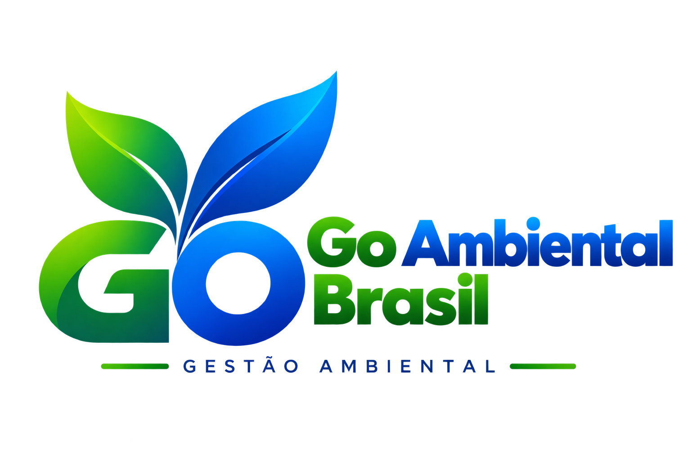
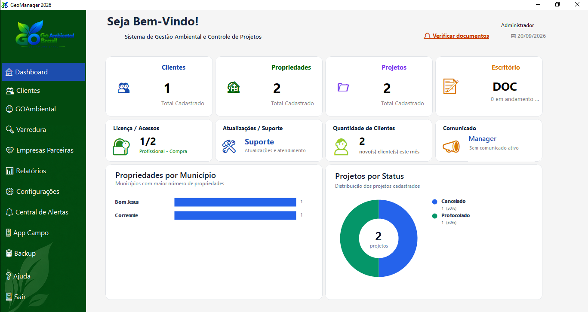
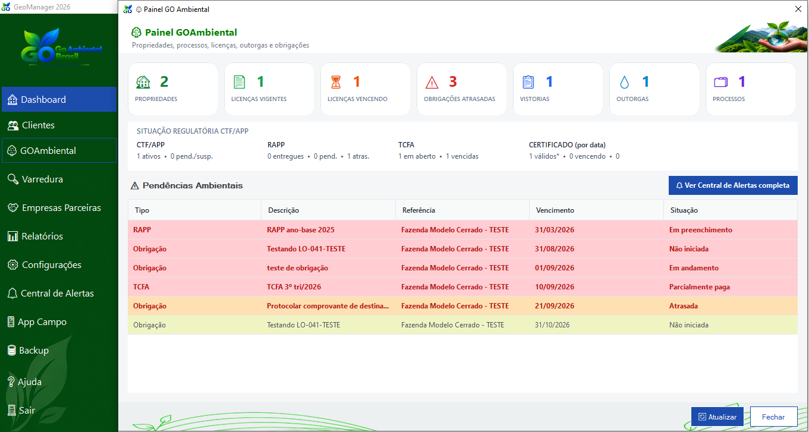
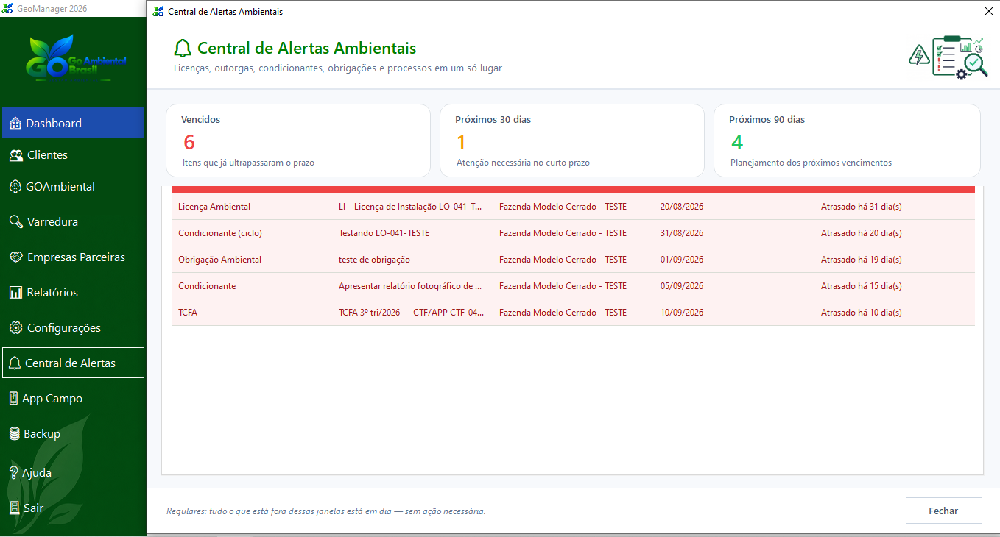
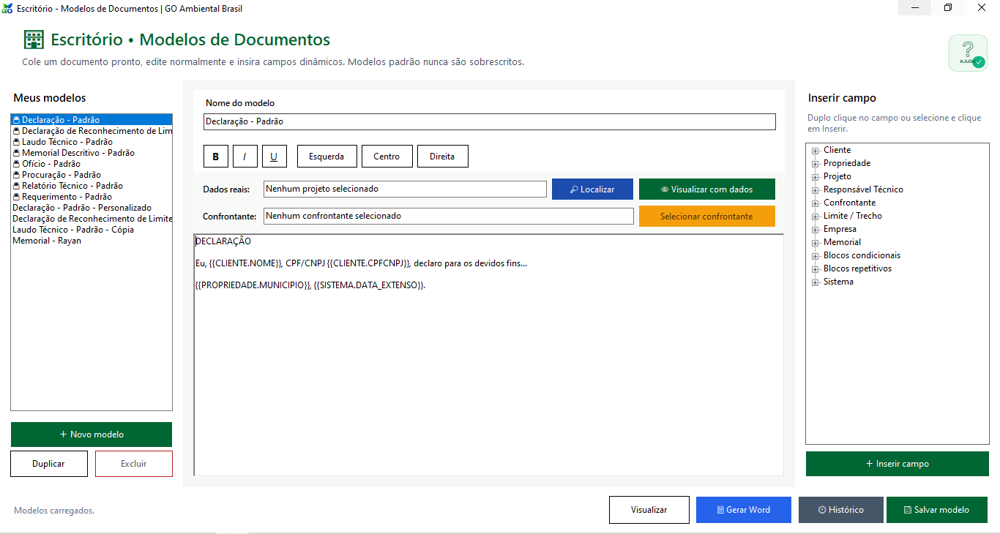
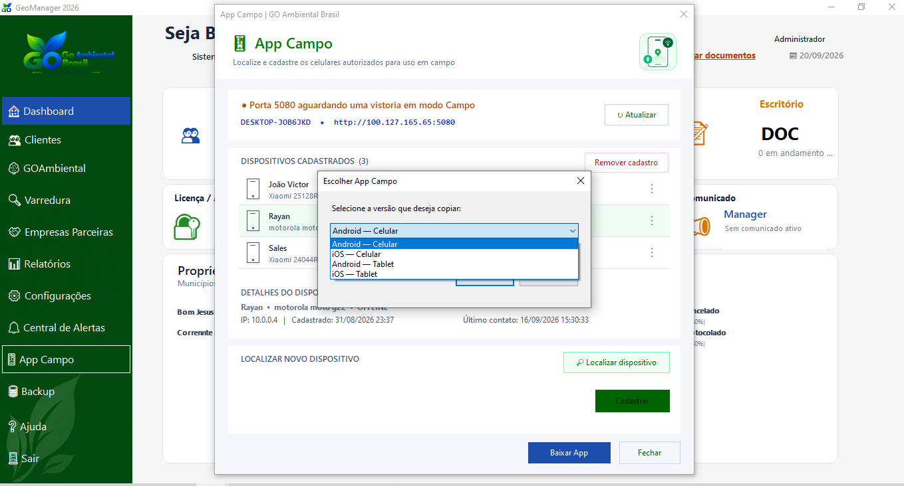
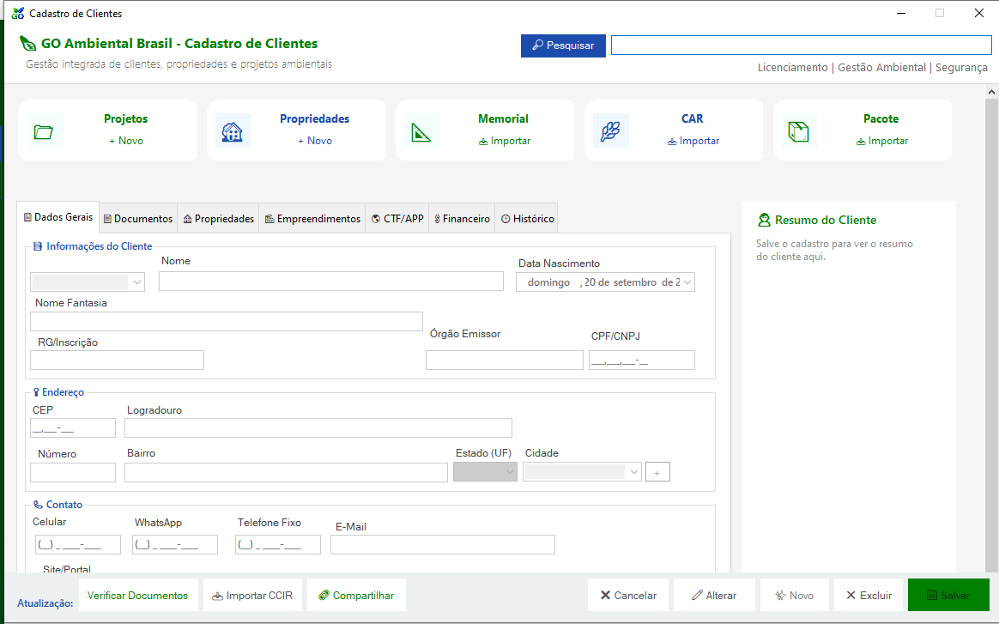
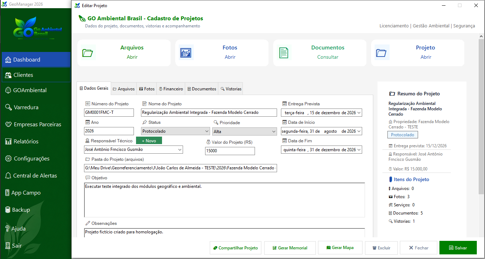
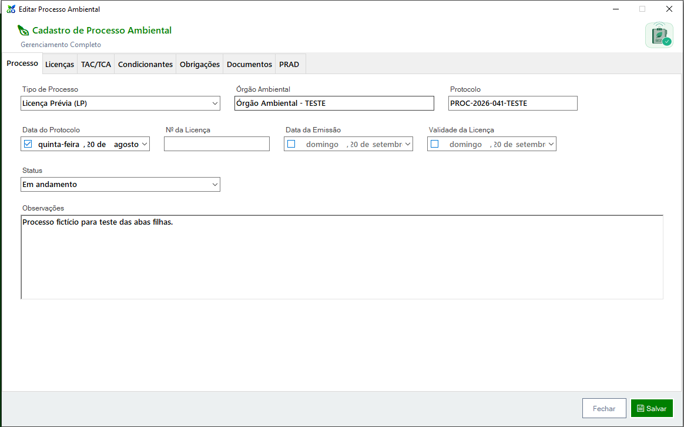
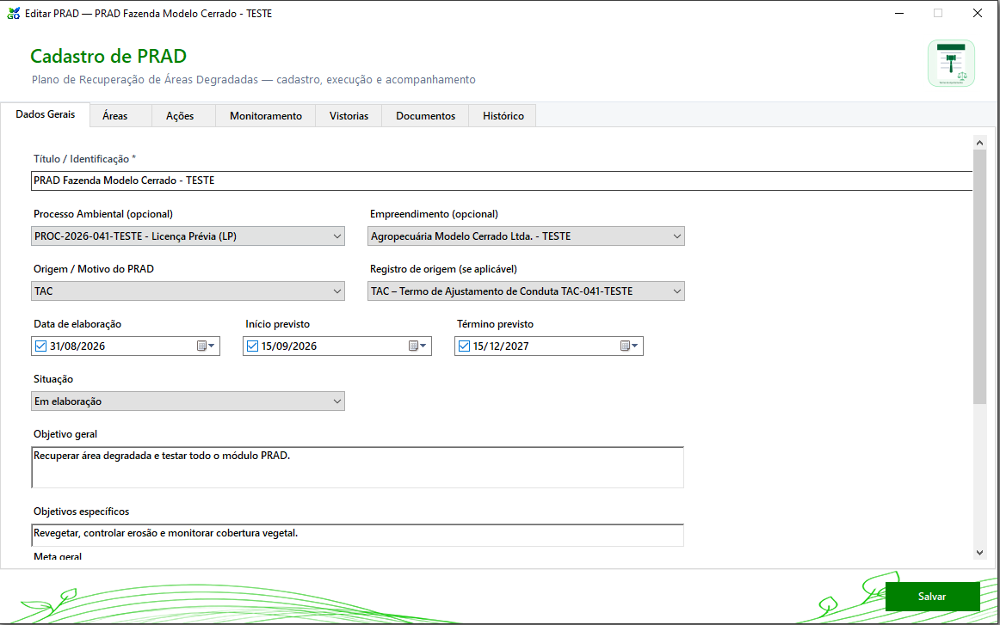

Clientes e propriedades
Cadastros integrados, projetos, propriedades, documentos e informações organizadas por cliente.

Clientes, propriedades, projetos, processos ambientais, documentos, vencimentos e vistorias integrados em uma única solução.

Uma estrutura pensada para centralizar informações e reduzir o trabalho espalhado entre planilhas, pastas e controles separados.
Cadastros integrados, projetos, propriedades, documentos e informações organizadas por cliente.
Acompanhe licenças, condicionantes, obrigações, TAC/TCA, documentos e PRAD.
Visualize pendências, itens vencidos e próximos vencimentos para antecipar providências.
Crie modelos com campos dinâmicos e gere documentos Word utilizando dados já cadastrados.
Controle informações relacionadas a CTF/APP, RAPP, TCFA, certificados e outras obrigações.
Centralize arquivos, fotos, documentos, responsáveis, prazos e acompanhamento dos projetos.
O Painel GO Ambiental reúne propriedades, processos, licenças, outorgas, vistorias e obrigações, além de destacar pendências ambientais.


A Central de Alertas apresenta itens vencidos e compromissos dos próximos períodos, ajudando no acompanhamento de licenças, condicionantes, obrigações e outros prazos.
Monte modelos, insira campos dinâmicos de clientes, propriedades, projetos e responsáveis técnicos e gere documentos em Word com os dados do sistema.


O GO Ambiental Brasil possui estrutura de App Campo para dispositivos autorizados, integrada à rotina de vistorias e coleta de informações.
Quero conhecer o App Campo →Clique em qualquer tela para ampliar e visualizar os detalhes na resolução original.




Entre em contato e solicite uma demonstração.